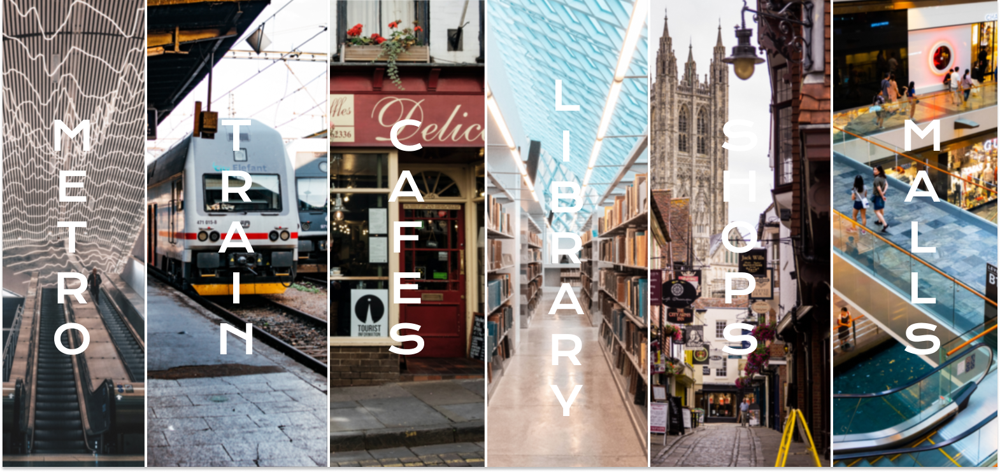
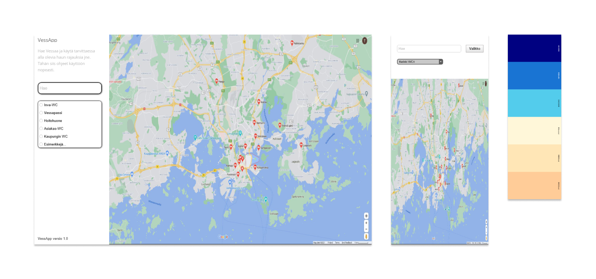
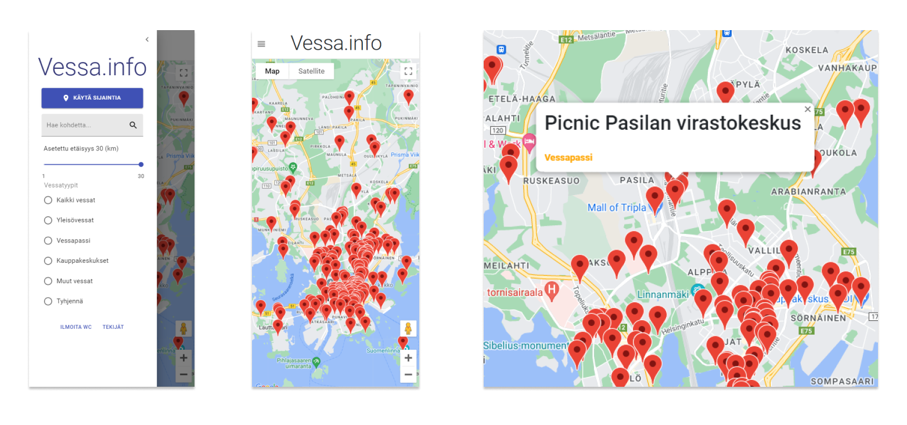

THE PROBLEM
Finding a public restroom nearby can become a hassle. This is why we created vessa.info, which shows
public restrooms available to the user using Google Maps API. At the moment,
the application covers only the Helsinki Metropolitan Area
(Helsinki, Espoo, Vantaa), but can be broadened to include databases from other areas as well.
Although Helsinki boasts an easy-to-use database covering the city's own public bathrooms, those do not
account for other restrooms open to the public. Similarly, the data
used by Google Maps is, at best, limited.
Examples of locations not included in these services are metro and train stations, cafes, public libraries, shops as well as shopping malls.
Public restrooms can be hard to find, even though they're everywhere.

USER RESEARCH
Finland alone has over 50 000 people suffering
from chronic gastrointestinal diagnoses.
The people facing these issues have a very common everyday problem: they need to use the bathroom more
frequently. At home, this is a non-issue, but during travels and daily commutes,
the problem is highlighted. To combat this, the IBD ja muut suolistosairaudet ry association has
implemented a nationwide
Vessapassi, or Bathroom Pass program.
In essence, companies and other public locations can opt-in to the program and communicate to their
customers that they have implemented this system.
Then, the users with a Vessapassi can bypass lines or use the locations private bathroom - no questions
asked. People woth chronic gastrointestinal illnesses have an accentuated need to know and find bathrooms at short notice,
which is why programs like Vessapassi have been implemented. Vessa.info is designed to show not only Vessapassi-compatible
locations, but also broaden the search of public bathrooms in general.
Besides those affected by chronic illness, there are a lot of other groups who need information about
public bathrooms - tourists, for example. I'm sure most of us
can relate to being in a foreign city trying to find a bathroom to use. The tourism trade is slowly
getting back to its feet after the COVID-19 pandemic,
and businesses are eager to house tourists once again. COVID-19 has skewed and cancelled the gathering
of recent data, but looking at pre-pandemic numbers
gives us an idea of how many trousists visit Finland on a yearly basis. In 2019, around
3 million bednights were spent in the Helsinki metropolitan area,
nearing almost half of all bednights spent in Finland.
Local residents need to find public bathrooms as well. Parents with young children often need
special bathrooms. People in wheelchairs need to know which
bathrooms they can access. Seniors might need to use the bathroom more often. People sitting in parks
during the summer - especially women - might want to find a
nicer bathroom than the overused public ones located in parks. This is all to say that
different people have different needs in regards to bathrooms, and that information is not highly accessible at this moment.
50,000 +
IBD, IBS, and other chronic gastrointestinal illness sufferers.
3,000,000 +
Bednights spent in Helsinki Metropolitan Area yearly.
1,400,000 +
People living in the Helsinki Metropolitan Area.
MAKING THE APP
Working as a team of five, we ideated the application for an innovation course at Haaga-Helia University
of Applied Sciences.
I came up with the idea itself, which lent me to conduct the user research detailed above. I am also
diagnosed with IBS, so I had
a real-life connection to the use-cases of the product.
With just a few months to work with, we decided on a modified SCRUM-framework implemented in a Working From Home -environment.
We used Trello
to visualize and categorize schedules for sprints, to-dos, doings, and finished components. We implemented
2-3 week sprints to fit our personal schedules as well as the course schedule, and had a bi-weekly sprint meeting. As we took on items from our backlog, we assigned
tasks according to interests and expertise.
I took charge of prototyping the look of the app, building the User Interface, designing the color palette, as well as producing the logo.
The main technolgies we used were React JS,
Material UI, and
Google Maps API.
We combined multiple open sources of bathrooms in the Helsinki mteropolitan area. Some sources used JSON-data, others XML, others something else.
For a simple solution, our team built a parser that standardizes the data to a single format, which the app uses.
Here
you can see the full source code on GitHub.
FROM PROTOTYPE TO PRODUCT
Before I could program the UI, I made simple prototypes to visualize the UI and UX goals for our team. The prototype was a quick mock-up which mostly centered on accessibility features and how information is displayed, with a possible color-palette. Having the map itself be the focal point and main component of the app was crucial, with a hidden side-menu for other components.

I wanted to keep things simple, reponsive, and accessible.
While programming the UI I added all of the search-components to the sidebar-menu. We wanted to keep it to its absolute minimum, so as not to make the process
of searching for bathrooms complex or hard-to-do. The information displayed is in a hierarchical top-down form. By pressing the "Käytä sijaintia"
button the program automatically shows your location on the map - the easiest way to find nearby bathrooms. Below that the user has the
opportunity to search for specific locations, which is useful for designing trips, or when using GPS-location is not possible.
Distance-parameter and bathroom type are implemented as well, for a more specific search.
Accessibility was of high concern, because
end-users would be comprised of a large scale audience with very different backgrounds. This manifested in the use of clear, easy-to-read fonts,
a simplified color-palette, and a mobile-first UI. The user sees the type of bathroom when clicking on a marker, which helps in the
categorization of information in map-view.
We wanted the users to be able to find bathrooms to their specific needs, which is why we implemented location-based and type-based search methods.
We conducted A/B testing to determine if the chosen components worked the way we wanted them to.
I also consulted the rest of my team regarding design choices, presenting different options. In the end, we're extremely happy with how
the app works - and looks.

TAKE-AWAYS
During this project ideation and innovation were key. Public bathroom finding is a problem only half-solved by programs like Google Maps and
local map-applications. For vessa.info I got to work on a body of user research that preceded my expectations - there really is a need for this product.
Keeping to an idea, I feel like I had the resources to refine it until the product worked and looked the way I wanted it to.
Vessa.info is available in browsers for all users with an internet-connection, it's easy-to-use and accessible for anyone, and it looks modern and professional.
Even with very limited prior experience in design, with the help of a good idea and a talented team, I feel like we built a great product.